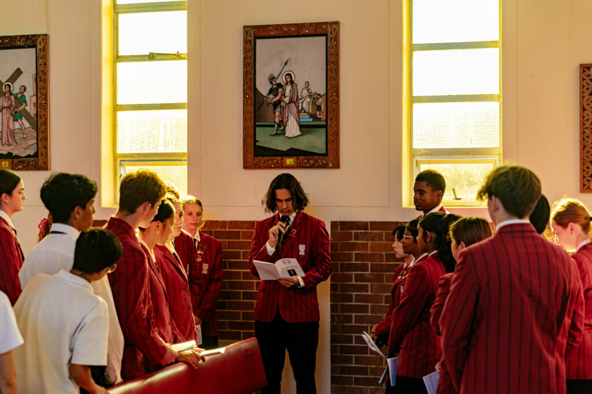

Our School Values
At John Paul College, our core values guide everything we do and shape the way students learn, grow, and interact with others. Rooted in Catholic faith and tradition, the values of Faith, Hope, and Love are central to school life. These are not just words but principles that influence daily actions—encouraging students to develop a strong sense of purpose, kindness, and compassion in everything they do..
Students are encouraged to live out these values both in and outside of the classroom. Faith inspires trust in God and confidence in oneself. Hope motivates students to aim high and stay positive, even in challenging times. Love is expressed through respect, service, and care for others. These values create a warm and supportive environment where students feel safe, valued, and inspired to make a difference in their communities.
We learn to follow Jesus’ teachings by showing care and respect for others, standing up for what’s right, and helping those in need. Faith teaches us to trust in God and ourselves. Hope helps us stay strong and positive when things are hard. Love means looking after others, being kind, and forgiving. Whether it’s in the classroom, on the sports field, or with our friends, we try our best to live out these values every day.
At John Paul College, our values shape the heart of our school culture. We are guided by the principles of Faith, Excellence, Community, and Service, which reflect both our Catholic foundations and our commitment to developing well-rounded, responsible young people.
Faith encourages students to grow spiritually, develop a relationship with God, and live with purpose, honesty, and compassion.
Excellence means striving to be our best in all areas—whether it's in learning, leadership, sports, or the arts. We believe that every student has potential and should be supported to reach it.
Community is about belonging. We are a caring school where every student is valued and included. Respect, kindness, and teamwork are at the heart of our relationships.
Lastly, Service reminds us to use our gifts to help others. Whether through volunteering, fundraising, or everyday acts of kindness, we encourage students to make a difference in their school, families, and wider world.
